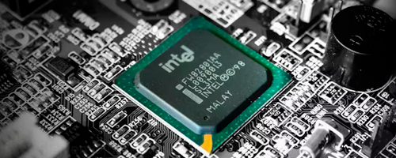
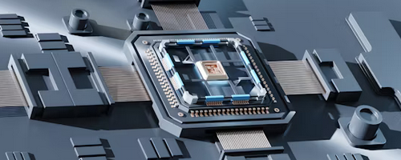
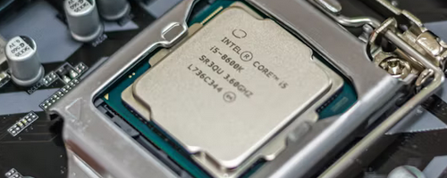
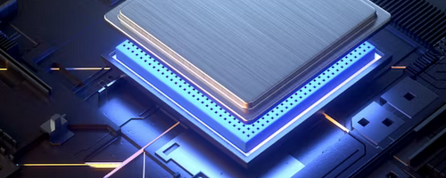
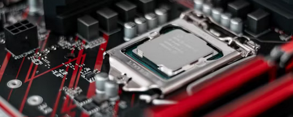
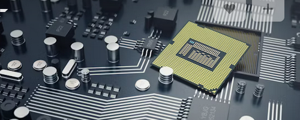

💡 Tip: Use Shift + Scroll to move sideways
-

1968
Intel Founded
Robert Noyce and Gordon Moore rename NM Electronics to Intel Corporation…
-

1971
First Microprocessor
Intel debuts the 4004, the world's first commercial microprocessor…
-

1978
8086 Processor
Launch of the 8086 processor, establishing the x86 architecture…
-

1985
First Intel Architecture
The Intel 80386 processor is introduced, featuring a new 32-bit architecture that significantly boosts performance and expands memory capacity.
-

1993
Pentium Processor
Intel launches the Pentium processor, marking a new era of high-performance computing with its superscalar architecture and integrated floating-point unit.
-

2006
Core Microarchitecture
The Intel Core microarchitecture is unveiled, delivering breakthrough energy-efficient performance and paving the way for multi-core processors.
-

2012
Ivy Bridge Microarchitecture
Intel Ivy Bridge processors are launched, featuring 22nm process technology and introducing USB 3.0 support.
-

2016
Kaby Lake Microarchitecture
The Intel Kaby Lake processors are introduced, enhancing performance and efficiency with improved 14nm process technology.
-

2020
Tiger Lake Processors
Intel Tiger Lake processors are launched, featuring 10nm process technology and delivering unprecedented AI performance and integrated Thunderbolt 4 support.
-

2022
Alder Lake Processors
The Intel Alder Lake processors are introduced, featuring a hybrid architecture that combines high-performance and high-efficiency cores for the first time.